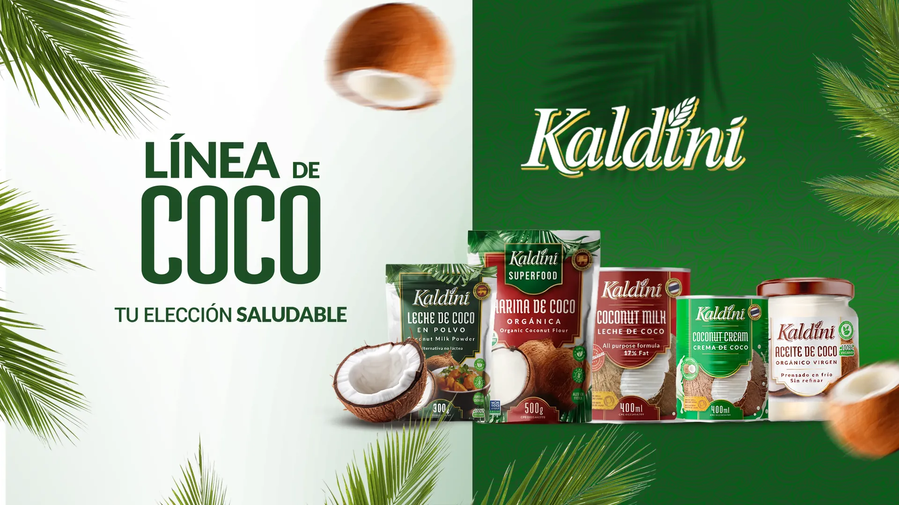
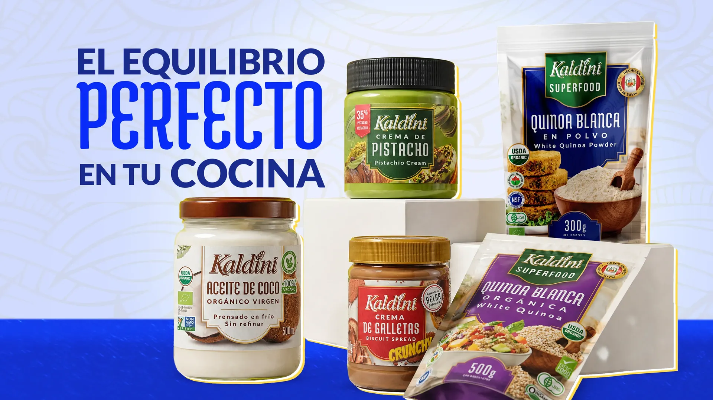
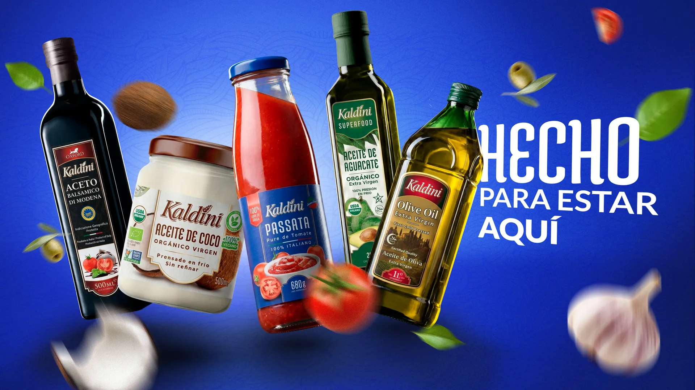

Crema · 227 g
Crema de Pistacho
Un lujo para el paladar, hecha con pistachos seleccionados.
Porque todo lo hacemos con amor
+10
Una década acompañando a las familias venezolanas, ganándonos un sitio fijo en la despensa.
130+
Para llenar tu despensa de principio a fin, sin tener que buscar en cinco lugares distintos.
11
De Margarita a Maracaibo, con más de 100 puntos de venta en todo el territorio nacional.
Los que nunca faltan
Sigue bajando para recorrerlos
Diez líneas, una sola marca. Pasa el cursor por cada categoría y entra a descubrir todo lo que Kaldini tiene para tu cocina.
Pasa el cursor o toca cada línea para abrirla y conocerla de cerca.

Tu elección saludable: productos a base de coco para cocinar, untar y endulzar.

El equilibrio perfecto en tu cocina: quinoa orgánica, cremas untables y aceite de coco.

Aceites, passata y todo lo esencial para la cena italiana en casa.
Ideas fáciles para cocinar con Kaldini. Elige una receta o toca las cartas para barajarlas.
Todo lo que necesitas saber sobre nuestros productos y cómo conseguirlos.
Es una marca de alimentos con una variada selección de productos para tu despensa: cremas untables, palmitos, tés e infusiones y conservas como los tomates pelados.
Si eres persona natural, encuéntralos en nuestros aliados comerciales: más de 100 puntos de venta a nivel nacional. Si eres comerciante o distribuidor, llena el formulario y un asesor de ventas te contactará para mostrarte el catálogo completo.
¡Es muy fácil! Entra a nuestra página de aliados comerciales y encuentra el punto de venta más cercano a ti.
Acarigua, Barcelona, Barquisimeto, Ciudad Bolívar, Gran Caracas, Maracaibo, Margarita, Maturín, Puerto Cabello, San Felipe y Valencia.
Despachamos en los estados donde estamos presentes en un plazo de 5 a 12 días hábiles, una vez confirmado el pago de tu pedido.
Para untar en pan, tostadas, galletas o frutas, y también como ingrediente en postres, rellenos y decoraciones. Perfectas para el desayuno o la merienda.
Una línea completa: té herbal de manzanilla, de menta y de frutas del bosque, té negro y té verde, en cajas de 20 sobres (60 g).
Sí. Una vez abierta la conserva, pasa el contenido a un recipiente tapado y refrigéralo. Consúmelo en pocos días para mantener su frescura.
Porque reúne en una sola marca productos para cada momento del día, del desayuno dulce a la cena italiana o el té de la noche, con buena relación calidad-precio y disponibilidad en Venezuela.